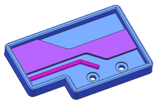
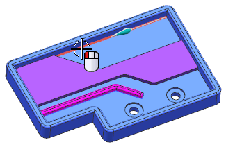
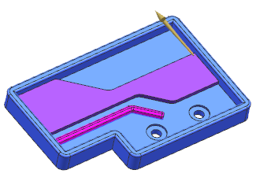
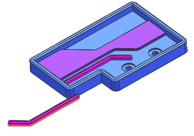

复制草图
-
打开 skt10_copy_sketch。

-
在部件导航器中，选择要复制的特征：
-
选择草图 (11) “SKETCH_001”
-
按下 Shift 并选择边倒圆 (15)

-
-
按下 Ctrl+C，或者选择编辑→复制以复制高亮显示的特征。
-
按下 Ctrl+V，或者选择编辑→粘贴以开始粘贴特征命令。
粘贴特征对话框的原始父级列表中将显示完成粘贴操作所需的参考。
列表中的两个参考显示 符号，表示它们的参考已通过软件自动判断所需几何体解决，您可以选择新的参考，列表将显示 符号，表示该参考通过用户选择解决。
-
在表达式组的映射方法列表中，选择链接至原先的。
这将把副本的特征参数与原先的特征参数关联。
-
选择如图所示边以定义新的草图 CSYS。

原始父级列表中的第一个参考显示 符号，表示该参考通过用户选择解决。
将高亮显示草图外部参考。
-
选择新的草图参考：

边将高亮显示，并显示矢量箭头，如果方向不对，双击方向矢量以反转。

原始父级列表中的所有参考都显示 符号，表示它们都已通过用户选择解决。
-
点击确定以粘贴特征。
